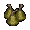

Incense
| Incense | |
|---|---|
 | |
General Information
| |
Type :
|
Church Item |
Stack size:
|
30 |
Base Cost :
|
3 |
Source(s)
| |
| Church workbench, Bishop | |
Study Information
| |
Study reward:
|
5 15 |
Technical Information
| |
Internal name:
|
incense_1 |

Incense is a church-related consumable, able to be used in either incense burner in order to provide a temporary +2 Church Quality per single use, lasting 4.5 minutes; 0.6 days.
Church Quality per single use, lasting 4.5 minutes; 0.6 days.
Recipe
| Church workbench | |
|---|---|
| Item Produced | Materials Required |
| 2× Incense |
1× Freshener |
Study
| Study table | |||
|---|---|---|---|
| Tech Points | Resources Required | Energy | Notes |
| 5 15 |
1× Faith 2× Science |
- |
Not decomposable |
Trading
| NPC | Buy Tier | Base Cost | Qty | Sell Tier |
|---|---|---|---|---|
| Bishop | II | 3 | 10x | N/A |
See Also
-
Incense II - the greater variety, capable of +4 Church Quality, lasting 6 minutes.
Church Quality, lasting 6 minutes. -
Candle - an alternate series of church-related consumables.
| |||||||||||